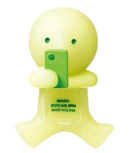

Mathew
Sinclair.
Research first, opinions later.

From ballet tights to Figma files.

Born in Inverness, spent ten years in Glasgow. I studied Musical Theatre, focused on dance. Come graduation, I realised it wasn't the life for me — turns out ballet tights and I have irreconcilable differences.
What I did gain from that degree was empathy and understanding of people, which has proven invaluable in UX. I'm not shy. Public speaking and sharing opinions come naturally, sometimes too naturally.
I worked in hospitality next, where I became obsessed with noticing broken processes and inefficiencies. I couldn't help myself — if I saw a solution, I wanted to test it. Problem-solving came naturally, but being customer-facing when they were frustrated with my ideas? That didn't fulfil me.
I've always loved tech. I wanted to get paid to type on a laptop. So I moved into the Cabinet Office as a security clearance case assessor — found my rhythm in structured, online work. But I knew I needed something that scratched a creative problem-solving itch.
UX design appeared. One year at the UX Design Institute and I was hooked — research-backed decisions, data informing every choice. My first role was at DFYNE, a Glasgow-based e-commerce company scaling millions. It was brilliant: challenging myself daily, learning constantly. But e-commerce doesn't scratch my itch anymore.
I'm looking for roles where I can push research and problem-solving further.
Fixing the thing that "pissed me off"
Redesigning DFYNE's mobile navigation to make collections make sense — and diversify revenue while doing it.
"Fix something that pisses you off." That was the whole assignment. No spec, no backlog ticket, no stakeholder wishlist — just permission to find a real problem and own it end to end. With almost no qualitative research budget and Microsoft Clarity as my only quantitative lens, I had to pick a problem I could actually prove and actually move.
So I picked the first thing that pissed me off as a new person on the site: the mobile menu.
Two different things, styled identically.
Opening the DFYNE mobile menu as a first-time visitor was disorienting. Two fundamentally different things were stacked on top of each other and styled identically:
- Categories — what the product is: Shorts, Sports Bras, Hoodies, Joggers, Tracksuits.
- Collections — who it's for and why it exists: Impact, Vision, Defy, Dynamic, Signature, Revive, Origin, plus editor drops like The Hannah Pearson Edit.
Same font size. Same weight. Same spacing. Same layout. A flat wall of 40+ links per gender, repeated again for Mens, all in one long scroll. Nothing told you that a category and a collection are completely different things — one is a product type, the other is a brand story.
A flat hierarchy of 40+ links, no chunking, no progressive disclosure. Everything at once.
Collections are DFYNE's editorial soul but read as just more line items. Nothing signalled these all do something different.
Mens repeated the same flat pattern in the same scroll, doubling the load and making it easy to lose your place.
One collection — Impact — was doing the heavy lifting. Best seller, viral on social, and carrying a hugely disproportionate share of revenue. Everything else sat in its shadow. That's fragile: if new users can't understand collections, they default to the one name they already know from social. The menu wasn't just confusing — it was quietly concentrating revenue into a single line and leaving the rest of the range undiscovered.
The opportunity: help new users understand what collections are, while giving Impact fans a reason to explore the others — diversifying revenue and building brand understanding at once.
With limited stakeholder direction and thin research data, no one was going to hand me a success metric. So I set my own — three explicit business objectives to design against and later measure in Clarity:
Make it obvious — without a line of explanation — that a collection is a distinct world worth exploring, not just another link in a list.
Stop the menu funnelling everyone toward Impact. Give the full range a fair shot at attention — and at revenue — so no single collection appears over-dominant.
A user should perceive "these are all different" in one glance — before reading a single word — so choosing feels effortless, not like homework.
Working with what I had.
No budget for a formal study didn't mean no research. It meant faster, scrappier research.
Real behaviour: where people clicked, where they didn't, how they moved through the menu. Two signals stood out — reliance on search as an escape hatch from the menu, and engagement heavily concentrated on Impact with a long tail of barely-touched collections.
Informal moderated sessions with friends, family, and new colleagues. One question did most of the work.
"What is Defy? What is Vision?"
Not one person answered "it's the collection that…" Nobody described them as collections at all.
That was the validation I needed: the concept of a "collection" simply wasn't landing. If people can't tell you what a thing is, the navigation has already failed — and I was aiming at the right target.
The words were fine. The structure was the problem.
Collections had no DNA. Each one — Impact, Vision, Defy, Revive — stands for something distinct, but the menu flattened them into identical text links, so users couldn't perceive difference, let alone act on it. The fix wasn't better copy. It was giving collections a visual system that says: these are not the same, and each is worth exploring.
Collection pills, pinned to the top.
I took the long, undifferentiated list of collection names and turned them into collection "pill" quick-buttons pinned to the top of the menu — above the category list, in their own visual container.
Pulling collections up into horizontally-arranged quick-buttons instantly separates shop by collection (a brand story) from shop by category (a product type). One glance tells you these are two different ways to shop, and the overload eases because collections become a scannable row instead of a buried 40-link scroll.
Each pill carries its own collection mark. That identity is the whole point — it signals, without a word of explanation, that these all do something different. New users learn "collections are distinct worlds" just by looking; Impact loyalists get a visual hook that makes Vision or Defy worth a tap instead of a scroll-past.
This solves both halves of the brief at once — new users finally get what a collection is, and Impact fans get a reason to explore beyond Impact.
Differentiating collections
Common-region & proximity. A bordered "shop by collection" zone above the category list tells users these belong to one class, distinct from categories, before any label is read.
Recognition over recall. A mark is read pre-attentively — users don't have to decode an unfamiliar word like "Defy" to sense it's a distinct thing, so identity lands without explanation.
Balanced emphasis. Identical geometry says "same kind of choice"; the differing marks carry the "each is different" message — and because no pill is bigger or louder, Impact stops visually dominating the range.
Reducing decision fatigue
Hick's Law. Fewer, well-grouped choices shorten decision time. Progressive disclosure replaces "everything at once" with a scannable set the eye can take in whole.
Serial position & least effort. Surfacing high-intent collections first makes the common path the fast path, so most users decide without deliberating.
Spatial memory. A consistent home for collections means a returning user re-finds one by location plus mark — no re-scanning the list, no fresh decision each visit.
The numbers moved.
Measured against the 7 days prior, split by International and USA store — Microsoft Clarity.
The menu is being used — search is being abandoned
Users shifted from searching to navigating. Search usage dropped 39–52% internationally and 29–49% in the USA — people stopped hunting for an escape hatch because the menu finally made sense. A clean adoption signal in both markets.
Engagement surged on the hero collections
Vision is the headline — the collection I most wanted new users to discover jumped +311% internationally and +124% in the USA. Exactly the diversification I designed for. Impact still grew strongly (proof the pills lifted the whole system, not just the underdogs), but the range around it finally started getting attention.
Revenue followed engagement
Impact revenue rose +8% internationally and +19% in the USA ($807k → $884k) in the post-launch window — confirming a positive correlation between the new navigation and sales, not just clicks.
Better navigation → collections understood → engagement spread beyond Impact → revenue up and diversifying.
Owning the trade-off.
A horizontal scroll on the pill row means the collections furthest right can hide off-screen. The data caught it: Women's Signature and The Hannah Pearson Edit sat in that hidden zone and showed flat-to-declining performance internationally (HP Edit down ~42%) while others climbed. The pattern reads as a placement problem, not a product problem.
-
1
Reduce the horizontal scroll so every collection is visible without hunting — and deliberately protect the placement of Signature and HP Edit.
-
2
Optimise pill ordering — lead with proven engagement (Impact, Vision), but give underperformers better real estate rather than letting them fall off the edge.
-
3
Track the full funnel — menu click → collection page view → add to bag → purchase, reported separately for International and USA weekly, so the KPI is revenue outcome, not just clicks.
Where I'd take it if it were mine.
The mobile pills proved the principle — give each collection its own DNA and people explore it. On desktop I wanted to take that idea all the way: a mega-menu where every collection is a full-bleed editorial banner, its imagery doing the differentiating that a wordmark only hints at on mobile.
Categories stay as a clean text list on the left; collections become the visual hero on the right — the clearest possible expression of “these are two different ways to shop.”
This one didn't ship. The CEO — the main stakeholder — pushed back, and for a good reason: site performance is a top priority, and a menu carrying this many high-resolution images risked slowing page loads for every visitor. A navigation redesign that hurts Core Web Vitals is a net loss, however striking it looks.
I think that trade-off is real, and I'd want to solve for it rather than around it — lazy-loading banners on hover, serving lightweight next-gen formats with tight budgets, or leading with one hero image per collection and revealing the rest on intent. The idea earns its place only if it's fast.
"Fix what pisses you off" let me find a problem with real business weight instead of a pre-chewed ticket.
No budget forced me to pair Clarity behaviour data with one devastatingly simple interview question — enough to validate direction with confidence.
The menu was concentrating revenue into a single collection. Fixing comprehension diversified income.
I didn't rewrite the menu — I gave collections a DNA. That one shift moved clicks, revenue, and brand understanding together.
Turning a dead end into a comeback.
Redesigning DFYNE's 404 page from a stranded moment into a conversion-focused recovery path — completed as a single-day design challenge.
A dead end, not a detour.
Users landing on broken or moved URLs hit a minimal error state with no clear way back — a quiet leak of engagement, sessions, and revenue that nobody was measuring.
Turn the error page into a redemption moment.
A well-crafted 404 retains customers who land on broken URLs, builds brand trust through on-brand, helpful design, and guides users back into the shopping journey — instead of losing them at the door.
Three goals, one page.
Real DFYNE product photography, brand color and type, a tone that's confident and supportive — acknowledges the problem without apologizing for it.
Four high-intent category cards and a prominent "Shop All" CTA tied to real collections — showing what DFYNE sells, not generic links.
A lightweight "Report it" link turns customers into collaborators — every submission feeds future link audits.


Every choice, a tradeoff owned.
Real imagery builds trust; the original audit flagged placeholder recommendations as a friction point. Glossier, Allbirds and Everlane all ship product photography on their error pages — generic 404s belong to utilities, not retail.
A disoriented user shouldn't face a blank text field. Guided discovery removes friction — Nielsen's research backs users preferring guided paths in error states over self-service search.
One page, two jobs: the user gets unstuck, the team gets error data that feeds redirects and link audits. Zappos and Airbnb both use this pattern successfully.
Industry data shows 25–30% of 404 visitors escape via footer navigation. Every major e-commerce site keeps one on error pages — consistency is a trust signal.
WCAG 2.1 AA, from the ground up.
Built as a foundational principle, not an afterthought — contrast, keyboard support, touch targets and screen-reader semantics were all part of the initial spec.
Headline 21:1, body 7.5:1, "Report it" link 8.6:1 — all clear the 4.5:1 AA minimum, with underlines for color-blind users.
Full tab order, visible 2px focus ring, modal closes on Escape, carousel navigable with arrow keys.
44×44px minimum touch targets, swipe + arrows + keyboard on mobile, every animation respects prefers-reduced-motion.
Semantic <button>/<h1> markup, ARIA labels, modal marked role="dialog".
No traffic data — so the rigor is the proof.
With no 404 analytics available, validation leans on heuristic evaluation and competitive benchmarking instead of invented metrics.
Competitive benchmark
Verdict: the redesign meets or exceeds retail 404 standards — in good company with the interaction patterns competitors already use.
From spec to shipped.
-
1
Usability testing — 5–8 sessions to confirm category cards read as intuitive and reduce bounce intent.
-
2
Staged rollout — ship to 10–25% of 404 traffic first, watch for bugs before full launch.
-
3
Monitor error reports — turn "Report it" submissions into fixed redirects and cleaner link audits.
From forced upsell to impulse buy.
A phased redesign of DFYNE's cart. Phase 1 introduces a confidence-signal feedback system into the existing cart; Phase 2 will replace the performance-draining third-party upsell app with a native, exploration-friendly feature — measured against real Shopify conversion data.
DFYNE's cart relies on a third-party upsell app that slows the site and pitches products in a way customers find pushy — a double cost of poor performance and poor perception, both dragging on average order value. Phase 1 didn't touch that app yet; it introduced a confidence-signal feedback system (delivery, login, discount status) into the existing cart. A phased rollout de-risked the change: Phase 1 shipped in June 2026, and the first month of Shopify data shows conversion climbing from a 0.67% baseline to 1.89% — validation to move into Phase 2, which replaces the upsell app itself with a native, exploration-first feature.
An upsell that worked against the sale.
The previous upsell mechanism ran through a third-party app bolted onto the cart. It created real performance bottlenecks, and the recommendations it surfaced felt forced rather than helpful — a bad combination that suppressed both site speed and average order value.
A third-party app degraded site performance and the shopping experience.
No clear exploration of products or purchasing options inside the cart.
Forced, unintuitive upsells hurt perception and engagement alike.
Four questions users couldn't get answered.
Direct user feedback — an office survey — surfaced the friction directly: shoppers kept hitting the same unanswered questions at the exact moment they were deciding whether to buy.
"Do I qualify for free shipping? How close am I?"
"Am I logged in? Is my account recognized?"
"What discounts am I eligible for? Are they applied?"
"When will this arrive? What are my options?"
Most UK customers already meet the free shipping threshold with a single purchase — the bar is exceptionally low. But the cart never told them that. Surfacing a status they'd already earned turns an invisible fact into a powerful conversion signal: positive reinforcement at the exact moment of the purchase decision, not friction.
A feedback system, not just a redesign.
Phase 1 introduced small, contextual feedback moments throughout the cart — each one answering a user question in real time, before it became a reason to abandon. The third-party upsell app itself is still live; replacing it is the work of Phase 2.
Clear free-shipping qualification status, shipping timeframes, and eligibility — answered before the user has to ask.
A prominent signal confirming the user is authenticated and their account is recognized.
Clear labeling of applied discounts and total savings — no more wondering if a code worked.
Together, these signals build cart confidence — reducing hesitation and abandonment by addressing objections before they're even formed, and building trust through transparency about status, savings, and delivery.
The third-party upsell app remains live for now. Phase 2 will replace it with a native upsell feature — giving the sales and product teams far better recommendation and conversion tracking, and removing a third-party script that's currently a drag on page load time.
Three phases, de-risked on purpose.
A phased rollout limited user confusion and let each release earn the next — validating design decisions with real usage before committing further.
A UI redesign of the cart, adding a delivery-cost signifier (free shipping status) and light personalization via on-screen username display — the phase measured in this study. The third-party upsell app stayed live throughout.
Replaces the third-party upsell app with a native feature — better recommendation and conversion tracking for sales and product, and faster page loads.
Pending stakeholder sign-off: a full overhaul of the logged-in state with a points signifier, integrating the cart with Smile.io's points system.

Left to pursue Phase 3 without constraint, this is the direction I'd push toward: a full points-and-loyalty overhaul of the logged-in cart, with a points signifier surfaced directly against the basket, a "1000 points = £5 off" reward ladder, and a refer-a-friend prompt built into the same moment.
This was designed inside a real business constraint, not just a wishlist: stakeholders believe visible discounts and sale-driven messaging cheapen DFYNE's premium brand positioning. So this concept frames the reward entirely around loyalty and points — never "% off" or "sale" — keeping the incentive but protecting the brand's full-price identity. It's the case I'd bring back to stakeholders, not a shipped decision.
Final interaction states — guest and returning customers


Guest and returning-customer paths were designed as distinct states — personalization and delivery-threshold messaging adapt to who's shopping.
Conversion nearly tripled.
Shopify analytics, pre-launch baseline (May 3, 2026) vs. the month following Phase 1 launch (June 7 – July 7, 2026).
The funnel is moving further, not just adding more in
Of the 237,378 sessions that reached checkout in the measurement window, 78,431 completed — the redesigned cart isn't just drawing more browsing, it's converting more of that browsing into finished orders.
Peak traffic, peak conversion
The strongest single day in the window was July 4 — a promotional/holiday spike of 252,861 sessions converting at 6.3%, nearly 3.3× the period average. The redesigned cart held up, and performed best, under the highest-traffic conditions it will ever see.
Shipping Phase 1 alone already produced a measurable lift — proof the direction is right before Phase 2 and 3 compound it.
Removing the third-party app's technical debt was itself a UX improvement, independent of any visual redesign.
Upsells that feel like discovery, not pressure, are the goal for Phase 2 — Phase 1 already shows that reducing hesitation and building confidence moves conversion on its own.
The July 4 spike validated the new cart under the exact conditions the old app-based version struggled with most.
This is a living project.
-
1
Ship Phase 2 — layer in contextual product recommendation logic, tuned using Phase 1's cart-addition and checkout data.
-
2
Track AOV directly — add average-order-value reporting alongside conversion so upsell impact is measured, not inferred.
-
3
Scope Phase 3 (potential) loyalty overhaul — pending stakeholder sign-off, a full redesign of the logged-in state with a points signifier, integrated with Smile.io. Most logged-in loyalty members never see their points balance today; surfacing it extends the same confidence-signal thinking to loyalty engagement and incremental AOV. Not yet implemented — direction to be confirmed with stakeholders.
Turning a password prompt into a trust moment.
A concept redesign of two screens in HMRC's Self Assessment submission flow — closing the trust gap when users are asked to re-enter credentials, and the anxiety gap when they don't know if their return actually went through.
Self-employed filers hit two silent friction points.
A user files their return in third-party software like Sage, authorising it earlier via secure OAuth. When it's time to submit to HMRC, they're asked for their Government Gateway password again — with no explanation. After submitting, they get no clear confirmation it worked.
"I already authorised this — why again?"
No explanation of why raw credentials are needed.
No confirmation submission worked — users call HMRC to check.
Research evidence
Only 49% find HMRC online services easy to use; only 36% trust the system prevents mistakes. Interviews describe filers who've "been in tears" over returns, with a recurring theme of no clear confirmation the submission went through.
Generic prompts are ignored by experienced filers; specific ones can read as accusatory and raise stress. There's no in-form way to dispute incorrect pre-filled data.
Mapping the flow
Before touching any screens, the research sprint traced the full Self Assessment journey and isolated exactly where the two authentication paths diverge.
Fix it with messaging, not new mechanics.
No new auth technology, no extra steps — the same two screens, rewritten to give information scent, trust signals, state feedback, and a plain-language explanation of OAuth vs. credential submission.
Two screens, built in real GDS components.
Screen 1 explains why re-authentication is needed and builds trust before the password field; Screen 2 closes the loop with an explicit confirmation. No custom styling, GDS components as-is.
Every word earns its place.
Users authorised Sage via OAuth already — asking again with zero context reads as broken or suspicious. A `govuk-details` expander explains the difference without cluttering the primary flow.
A notification banner states encryption, HMRC-approval, and scope of use up front. Per NatCen 743, generic reassurance is ignored — so it's specific and concrete instead of a vague "your data is safe" line.
GDS's `govuk-panel--confirmation` component, a reference number, a timestamp, and an explicit "what happens next" timeline together answer the #1 complaint in the Verian survey: no clear confirmation the return went through.
GDS components carry accessibility by default.
Every input has an explicit `govuk-label`; the disabled user ID field is announced as read-only.
The OAuth explanation uses native `<details>`/`<summary>` — fully keyboard-operable with no JS required.
Trust and success states pair a ✓ mark with text, never relying on green alone.
The confirmation panel is a landmark heading (`h1`), so screen readers hit "submitted" immediately on the new screen.
Redesigning the system, then redesigning the redesign.
My first instinct was ambitious: rebuild HMRC's authentication architecture so OAuth covers both data retrieval and submission. It felt like "real" interaction design. Walking the flow myself — reading the developer docs, Sage's KB article, the agent onboarding guide — changed my mind.
"Link Software" is described as one step but silently spans two different auth methods.
The flow was scattered across a citizen flowchart, developer docs, and Sage's own KB article.
"Document Submission Protocol," "scoped token" — technical terms with no human explanation.
My confusion was the research data.
If the official documentation couldn't make the flow clear to me, it wasn't making it clear to users either.
Watching a walkthrough of Sage's own HMRC integration confirmed the pivot: Sage runs the exact same technical flow — OAuth for data, credentials for submission — but wraps it in reassuring language ("HMRC-approved system," clear confirmation on link). The technical flow wasn't the problem. The missing reassurance was. So the scope shifted from rebuilding the architecture to designing the messaging and confirmation layer around it.
From concept to validated pattern.
-
1
Test the wording — moderated sessions with self-employed filers, checking whether the OAuth explanation actually lands.
-
2
Measure support-call impact — track "did my return go through" contacts before and after the confirmation-panel change.
-
3
Extend the pattern — apply the same trust + confirmation framework to other third-party-software handoff points across HMRC services.
{{ comingSoonTitle }}
Currently working on this case study — check back soon.